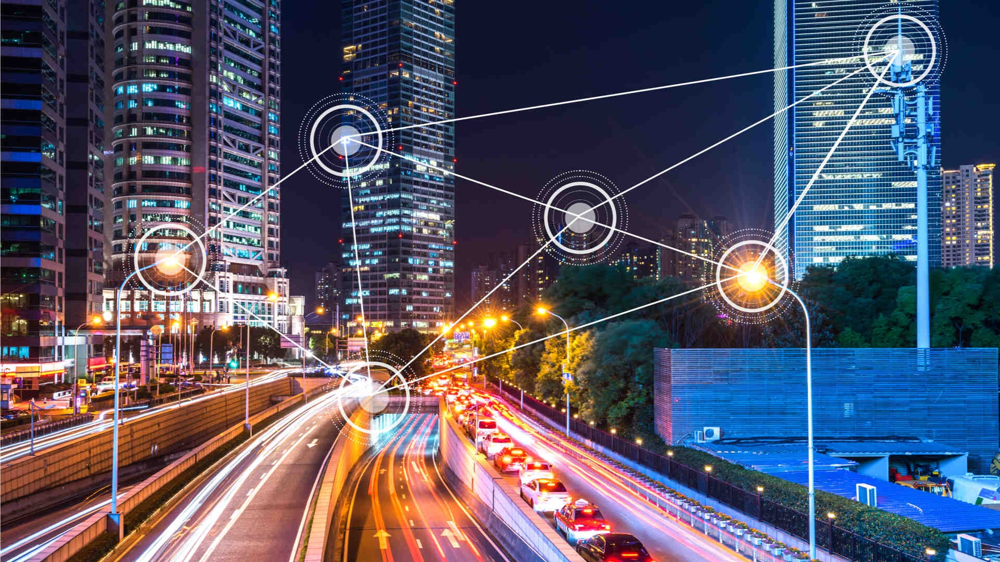

¿Qué caracteriza a una ciudad inteligente?
Una ciudad inteligente integra la planificación urbana con herramientas digitales para comprender mejor sus necesidades. Los datos pueden provenir de servicios públicos, sensores y reportes ciudadanos, siempre con medidas de seguridad y protección de la privacidad.
Tecnología al servicio de la ciudad
Las soluciones inteligentes pueden mejorar la movilidad, el alumbrado público, la gestión de residuos y la atención de emergencias. La tecnología debe responder a problemas reales y ser accesible para distintos grupos de la población.
Posibles servicios inteligentes
- Sistemas de transporte que informan tiempos de llegada y rutas disponibles.
- Redes de alumbrado que ajustan su funcionamiento según las condiciones del entorno.
- Plataformas para reportar daños, solicitar servicios y participar en consultas públicas.
Gestión de datos y participación

Una ciudad no se vuelve inteligente solo por instalar dispositivos conectados. Es necesario planificar el uso de los datos, proteger la información personal, evaluar los resultados e incluir a la comunidad en las decisiones sobre los servicios digitales.
| Servicio | Tecnología de apoyo | Beneficio esperado |
|---|---|---|
| Movilidad | Datos de tránsito y sensores | Mejor información para los desplazamientos |
| Alumbrado público | Control remoto y sensores | Uso más eficiente de la energía |
| Atención ciudadana | Plataformas digitales | Comunicación más directa con la comunidad |